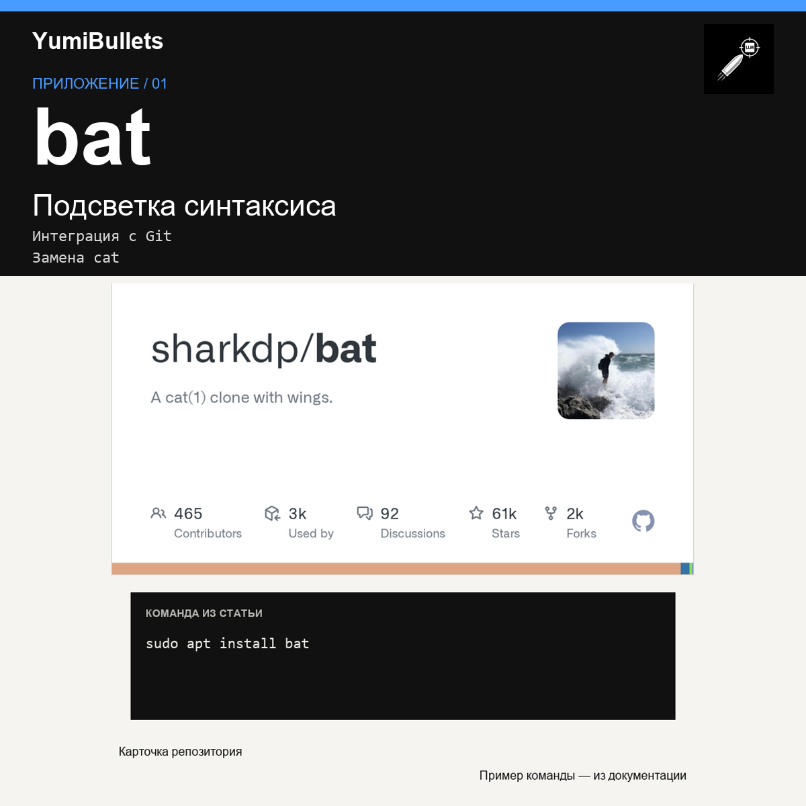

Читайте код в терминале с подсветкой синтаксиса через bat
Вы открываете файл с кодом в терминале и видите текст без подсветки. bat читает файлы с подсветкой синтаксиса и показывает изменения относительно Git-индекса.

Вы открываете файл с кодом в терминале и видите текст без подсветки. bat читает файлы с подсветкой синтаксиса и показывает изменения относительно Git-индекса.